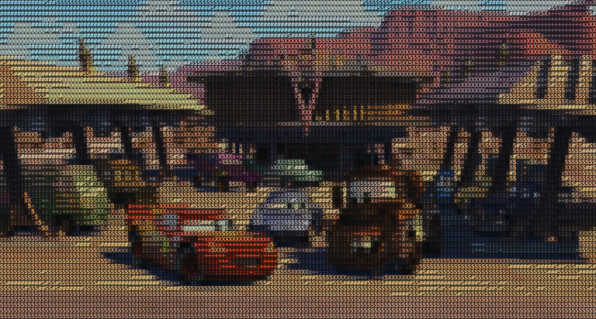
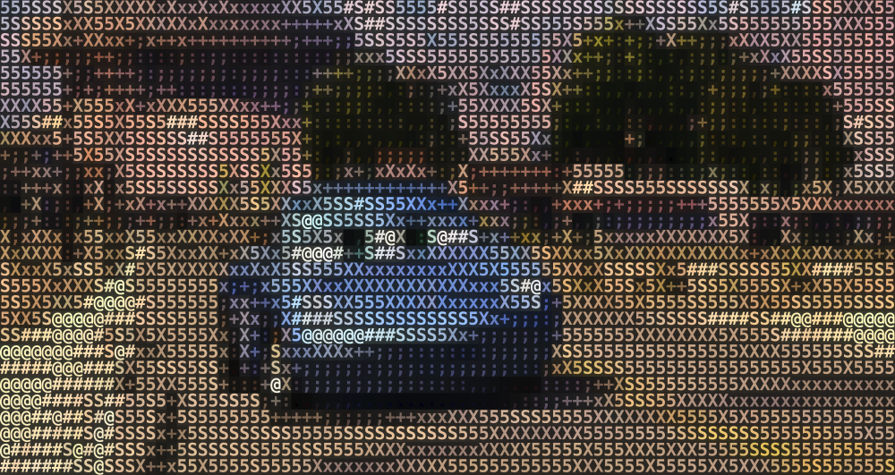
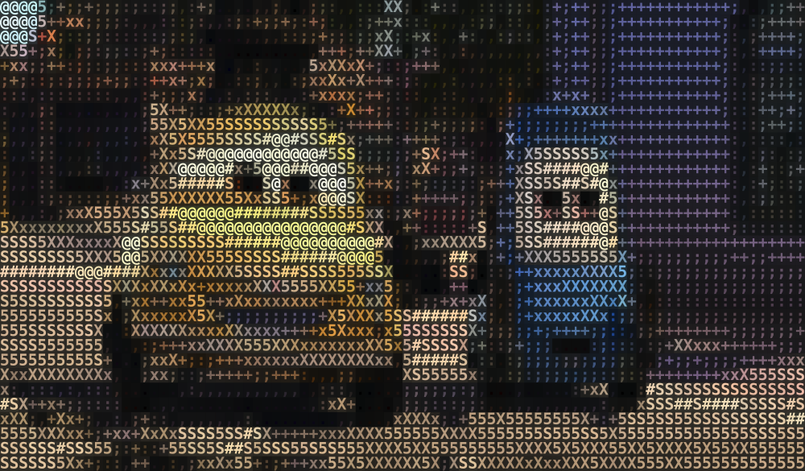
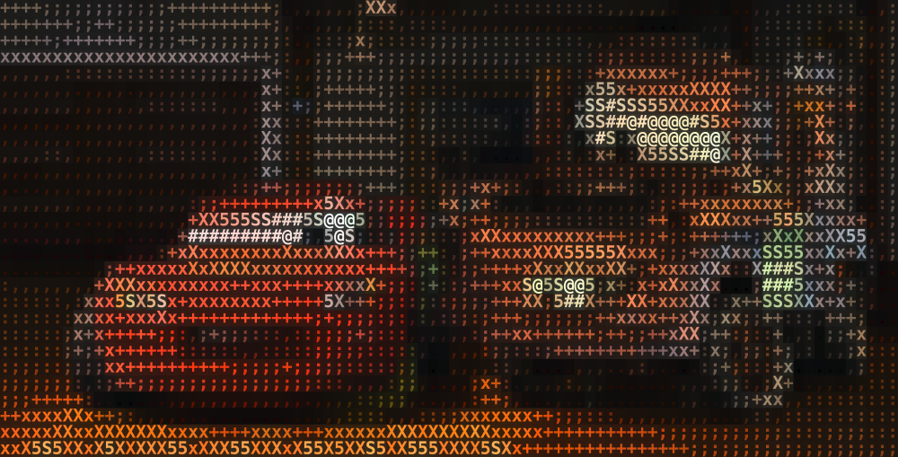
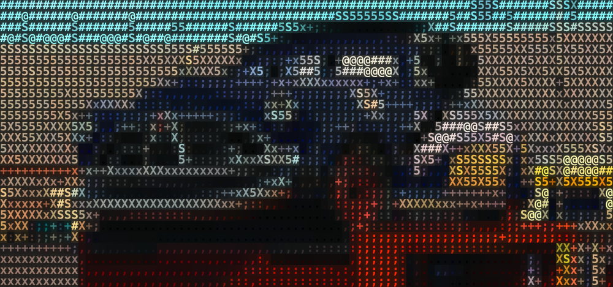

66
Integrated evidence planning
Multiple lanesOne roadmap
HEOR aligns payer needs, medical questions, evidence gaps, and the value story from study plan to launch
HEOR tune-up
Map / Align / Close / Own
01
Map needsPayer road
02
Align buildOne plan
03
Close gapsProof work
04
Own routeHEOR
HEOR helps steer integrated evidence